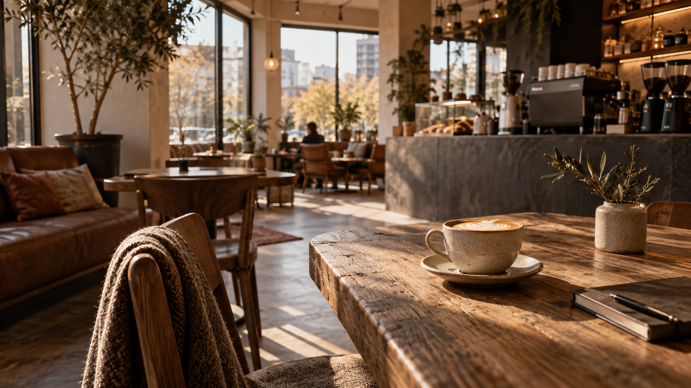
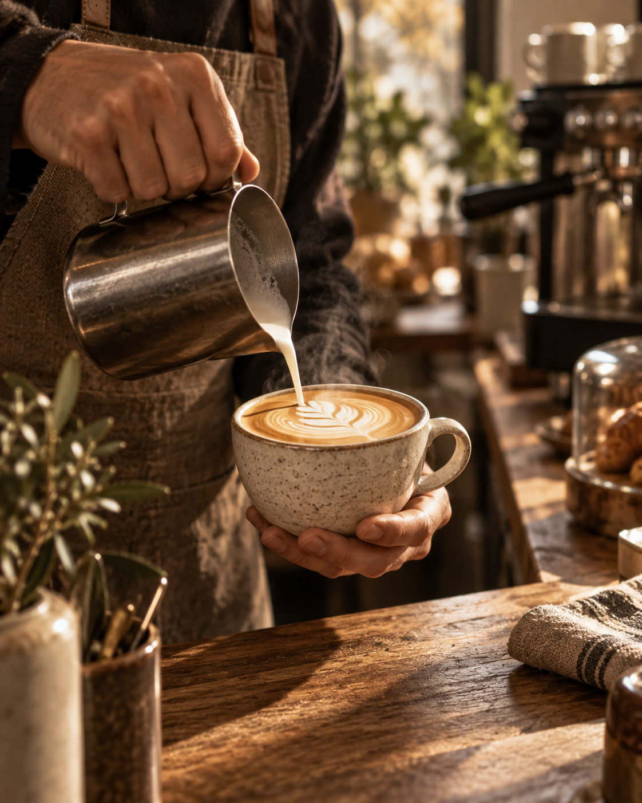
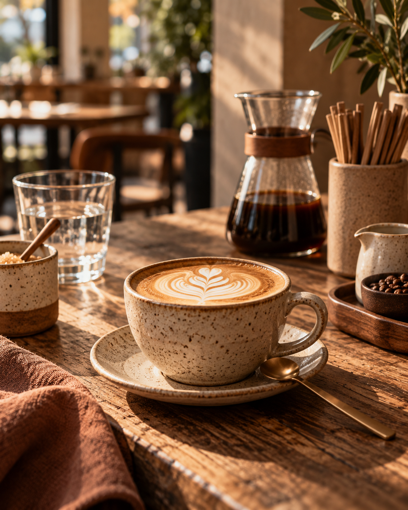

01 / В чашке
Кофе и не только
Кофе, чай, какао или горячий шоколад — подбирайте напиток под свой день.
ПЕРЕРЫВ НА КОФЕ↗
На Виктора Денисова есть повод ненадолго выйти из дома: взять кофе, выбрать что-нибудь к нему и немного задержаться.


СВОЙ УГОЛОКНа прогулке, по пути или во время небольшого перерыва — хороший повод зайти всегда найдётся.


Иногда для хорошей встречи не нужен план. Достаточно выбрать напиток и сказать: «Увидимся в Месте».
Заглянуть внутрь

 ЗДЕСЬ МОЖНО ПРИСЕСТЬ
ЗДЕСЬ МОЖНО ПРИСЕСТЬКофе с собой — отличный вариант. Но иногда хочется занять столик, поговорить или открыть ноутбук за чашкой чего-нибудь горячего.
Интерьер, чашки, десерты и небольшие детали. Нажмите на снимок, чтобы посмотреть крупнее.
Мы в Калининграде. Сверните на Виктора Денисова — и заглядывайте за кофе.
 Встретимся
ВстретимсяНезависимый демонстрационный дизайн-концепт KLD Web Studio — предложение по созданию сайта для кофейни «Место». Это не официальный сайт заведения; KLD Web Studio не действует от его имени. Адрес, телефон и перечисленные категории приведены по открытым карточкам организации и должны быть согласованы с владельцем перед коммерческим запуском; цены и актуальное меню не представлены. Сайт не принимает заказы, заявки, оплату и персональные данные от имени кофейни. Кнопки маршрута ведут на публичные карточки 2ГИС и Яндекс Карт, звонок — на публичный номер из Яндекс Карт. Фотографии заведения, предоставленные пользователем, дополнены сгенерированными рекламными изображениями; сгенерированные сцены не являются свидетельством реального помещения, персонала или конкретных позиций меню кофейни. Права на фотографии, согласия изображённых людей и использование бренда нужно подтвердить до коммерческого использования и продвижения.